Introduction
Introduction
Statistics for CSAI II
Travis J. Wiltshire, Ph.D.
Outline
What we will cover today:
- Course Expectations
- R, Rstudio
- Probability Basics
About Me
- B.S. in Psychology, University of Central Florida, USA
- M.S. in Human Factors & Systems, Embry-Riddle Aeronautical University, USA
- PGC in Cognitive Science, University of Central Florida, USA
- Ph.D. in Modeling & Simulation, University of Central Florida, USA
- Postdoctoral Fellowship, Quantitative Psychology and Dynamical Systems, University of Utah, USA
- Postdoctoral Fellow, Carlsberg Foundation, Department of Language and Communication, SDU, DK
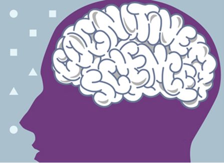
About me

Dr. Steve M. Fiore:
 |
| 
Dr. Jonathan Butner
 |
|
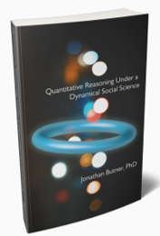
Research interests
- Research Interests:
- Team cognition and dynamics
- Collaboration
- Interpersonal coordination
- Social cognition and interaction
- Complex systems
- Quantitative methods and statistical modeling
- Learning and training science
 |
| 
 |
|
Personal interests
- Personal interests:
- Music
- Outdoors/Photos
- Culture and travel
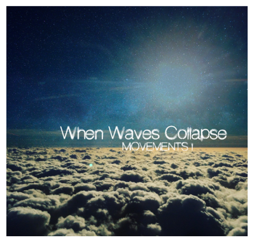
| |
| 
Dr. Silvy Collin

- BSc in Biology (Radboud Univ. Nijmegen)
- MSc in Medical Biology / Neurobiology (Radboud Univ. Nijmegen)
- PhD in Cognitive Neuroscience/Neuroimaging (Donders Institute)
- Postdoctoral researcher in Cognitive Neuroscience at Princeton University
- Assistant Professor at TiU since August 2020
Research: Already in my BSc I had an interest in both biology and psychology. Cognitive Neuroscience/neuroimaging has both of these represented which is why I chose that field. I study memory, and in particular episodic memory, using cognitive tasks and functional MRI. I find it intriguing to discover how people remember the world around them and their experiences, and how they learn from it.
Personal: In my spare time I enjoy reading, pretty much anything from detectives to romance to sci-fi, and I like to bake, cakes, cookies, etc :)
Course Expectations
Course Expectations
- Read the Syllabus!
- Follow the course schedule.
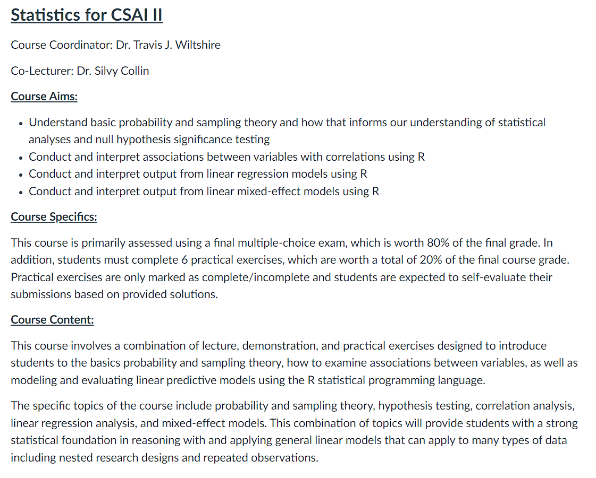
Course Expectations
- 6 EC course:
- 29 hours per EC
| Total hours for course | 168 |
|---|---|
| Time in Lecture | 21 |
| Time in Practical Sessions | 10 |
| Time for reading | 45 |
| Time for practicing in R | 40 |
| Time for Completing Practical Assignments | 22 |
| Time to prepare for Exams | 30 |
How to spend your time

How to get the most from this course (and be good at statistics in the future):
- To get the most out of this course, I recommend for each topic/module you:
- Read the Required Text
- Complete Swirl/LearnR Tutorials
- Complete Pre-Class Quizzes
- Attend/Watch Lectures
- Engage in in Class Exercises
- Check your Understanding (Reread if necessary, post questions on Canvas)
- Complete Required Practical Exercises
- Evaluate Practical Exercise Solutions (Post questions on Canvas, ask Questions in Practical Sessions)
- (Optional) Complete Associated Open Stats Lab)
- Dunlosky, J., Rawson, K. A., Marsh, E. J., Nathan, M. J., & Willingham, D. T. (2013). Improving students’ learning with effective learning techniques: Promising directions from cognitive and educational psychology. Psychological Science in the Public Interest, 14(1), 4-58.
Course Expectations
- Our Textbook is free!
- Download it from here: https://compcogscisydney.org/learning-statistics-with-r/
- Other reading materials are uploaded on Canvas.
Required readings must be completed before class on the date listed in the schedule!
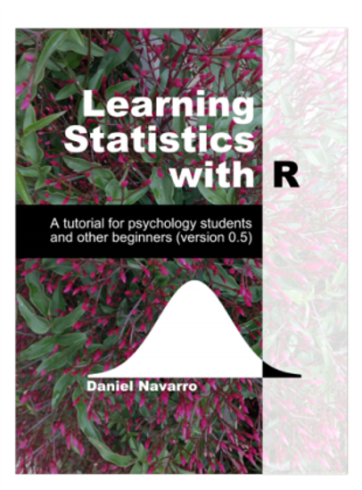
Practical Exercises
- 6 exercises on Canvas and self-evaluated
- Must be submitted on Canvas
- Will be checked for completeness/valid attempt by our student assistants
- No resubmission or resits
- Discussed during practical sessions
- Practical Sessions (more details soon)
Course Learning Objectives
- Understand basic probability and sampling theory and how that informs our understanding of statistical analyses and null hypothesis significance testing
- Conduct and interpret associations between variables with correlations using R
- Conduct and interpret output from linear regression models using R
- Conduct and interpret output from linear mixed-effect models using R
Course expectations
- Course meeting time/location: See My Timetable, location and time can vary.
- Practical Session: Typically on Fridays.
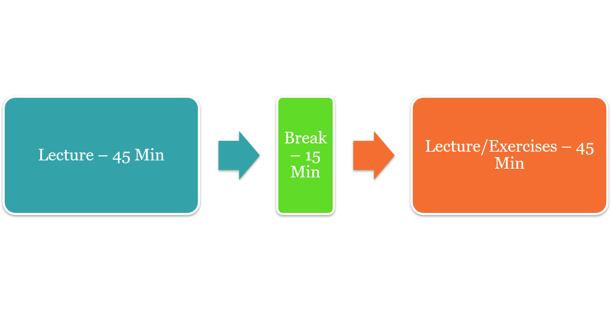
Course Expectations
- Canvas
- All course information and materials will be posted here
- Submitting Practical Exercises
- Your grades from exams will be posted here first (These are unofficial)
- Questions should be primarily through practical sessions or in class, but can be posted on Canvas.
Course Expectations
- Exams (80% of your grade)
- Final – 80%
- Multiple choice*
- Date and times for exams and resits will be posted in your time table
- You must make sure to register for the exams!
- Practical Exercises (20% of your grade)
- 6 assignments submitted through Canvas
- Deadlines are listed in syllabus and will be in the assignments section of Canvas
- No extensions
- Will be checked for completeness by our student assistants
- Recommended Exercises (in LearnR)
- Listed in schedule
Course Expectations
- Preferred question time is during the practical sessions.
- Questions about statistical theory or analyses:
- Check the syllabus, the required readings, or in the lecture slides.
- Questions about R Programming:
- Can’t help much when your R code/script does not work.
- Use Google, GitHub, StackOverflow, and the built-in help functions to figure out your code.
- Form peer groups to learn from each other and check each other’s code.
- Questions during Class:
- I encourage questions in class. Before, after, during practical sessions
Semester Plan
Semester Plan is in Canvas
R, R studio
Make sure R, R studio, and Swirl working on your computers!
- Go here and follow the directions:
Complete the required reading!
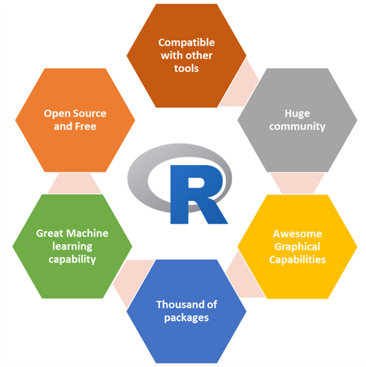
Where are we going in this course?
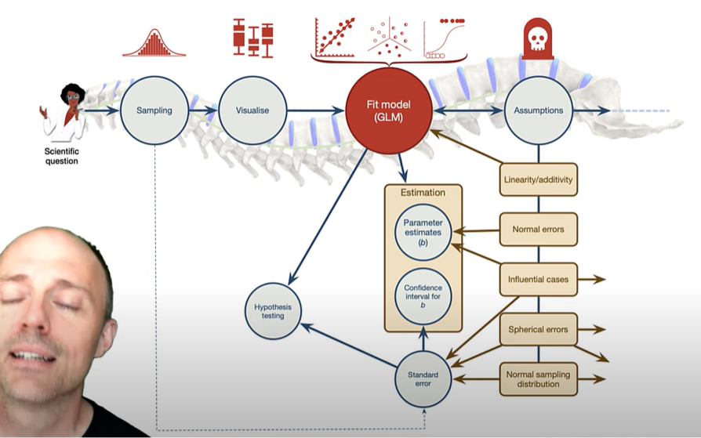
Questions?
Asking questions in encouraged
Probability Basics
Taco Literacy
- What if I told you a recent survey of 1000 Europeans showed that 72% of people were taco illiterate?
- 720 out of 1000 did not understand the important anatomical components and historical lineage of tacos.
- Would you expect 72% if you were to sample 10,000 Europeans?
- What if we found the number went down to 43%?
- https://tacoliteracy.com/
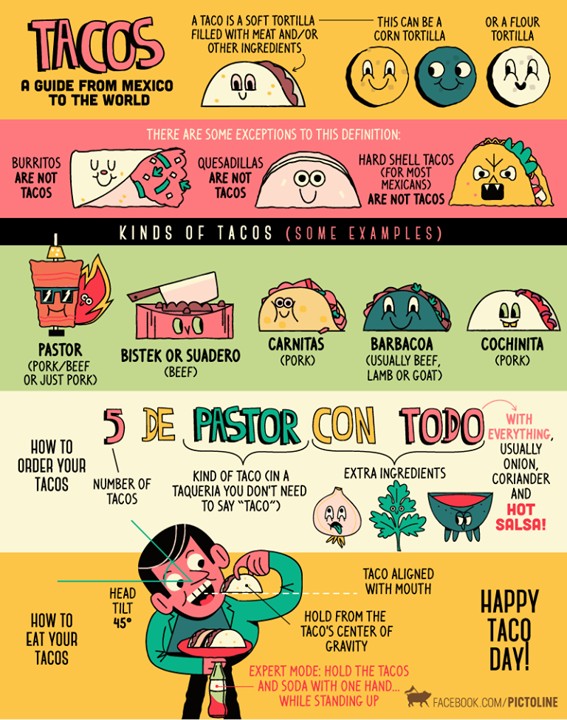
Why do we need probability theory?
- We use inferential statistics to answer questions about how representative our data are of the population
- The core of the science
- Probabilities form the basis for statistical inference.

Probability vs Statistics
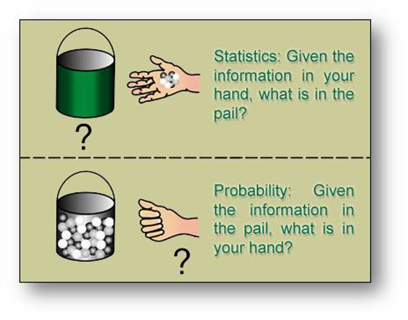
Frequentist vs Bayesian view

Probability Distributions
Elementary events – For a given observation, there outcome will be one and only one of these events.
Sample space – the set of total possible events
P(X) = 0-1
Sum of all probabilities is 1
Non elementary events
- E.g. wearing jeans
- P(E)= P(X1)+ P(X2)+ P(X3)
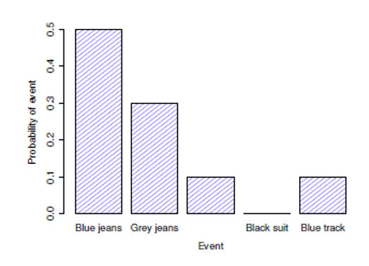

Binomial distribution
- Based on success probability
- E.g., number of successful tails in a coin flip, number during a dice roll
- N = number of observations or size parameter
- X is generated randomly from the distribution
\[P(X|\theta,N)\]
\[X \sim Bionomial(\theta,N)\]
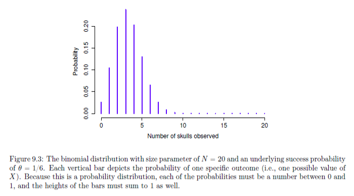
Binomial Distribution in R

dbinom(x=4,size=20, prob=1/6)## [1] 0.2022036| What it does | Prefix | Normal distribution | Binomial distribution |
|---|---|---|---|
| probability(density) of | d | dnorm() |
dbinom() |
| comulative probability of | p | pnorm() |
pbinom() |
| generate random number from | r | rnorm() |
rbinom() |
| quantile of | q | qnorm() |
qbinom() |
Visualize the binomial distribution:
dbinom(x=4,size=20, prob=1/6)#run the code#storeGive it a try:
If I request 50 tacos from a restaurant that serves both hard shell and soft shell tacos, what is the probability that 25 of them are soft shell?
I want to have a pizza party and order 20 pizzas. Pizzas can either have meat on them or not meat. What is the probability that 6 of the pizzas are vegetarian friendly?
I spend too much time trying to pick a movie to watch on Netflix so I create a program to choose something for me at random. I only allow my program to choose the following genres: comedy, action, sci-fi, drama, or thriller. If I watch 50 movies using my program, what is the probability that I watch 17 comedies?
Exercise 1:
- If I request 50 tacos from a restaurant that serves both hard shell and soft shell tacos, what is the probability that 25 of them are soft shell?
#Vy <- dbinom(x=25,size=50,prob=1/2)
print(y)#storeExercise 2:
- I want to have a pizza party and order 20 pizzas. Pizzas can either have meat on them or not meat. What is the probability that 6 of the pizzas are vegetarian friendly?
# For start Generate a series of values 0-20x <- seq(0,20,by=1) #Generate a series of values 0-20
y <- dbinom(x,20,prob=1/2)
plot(x,y, type='h', col='blue')
y<-dbinom(x=6,size=20,prob=1/2)
print(y)#storeExercise 3:
- I spend too much time trying to pick a movie to watch on Netflix so I create a program to choose something for me at random. I only allow my program to choose the following genres: comedy, action, sci-fi, drama, or thriller. If I watch 50 movies using my program, what is the probability that I watch 17 comedies?
#For start Generate a series of values of 0-50x <- seq(0,50,by=1) #Generate a series of values of 0-50
y <- dbinom(x,50,prob=1/5)
plot(x,y, type='h', col='blue')
y<- dbinom(x=17,size=50,prob=1/5)
print(y)#storeNormal distribution
- Most important in statistics!
- Called Bell Curve of Gaussian distribution
- Continuous distribution vs discrete case for binomial
\[X \sim Normal(\mu, \sigma)\]
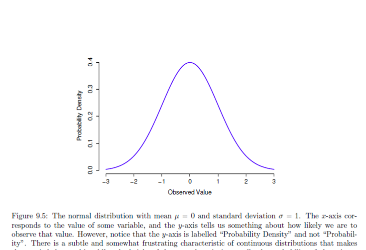
Normal distribution
\(X \sim Normal(\mu, \sigma)\)
- What happens when we change, the mean or the SD of a normal distribution?
 |
| 
Normal distribution
- Area under the curve must equal 1

t distribution
- Similar to normal
- Heavy tails
- Used in t-tests, regression, and more
- Used when you expect data are normally distributed, but don’t know mean or SD
- R code:
dt(),pt(),qt(),rt()

Chi-squared distribution
\(\chi^2\)
- Often used in categorical data analysis
- Shows up everywhere
- ‘Sum of squares’ follow this distribution
- R code:
dchisq(),pchisq (),qchisq (),rchisq ()

F distribution
- When you need to compare two chi-square distributions
- Comparing two sums of squares
- R code:
df(),pf(),qf(),rf()
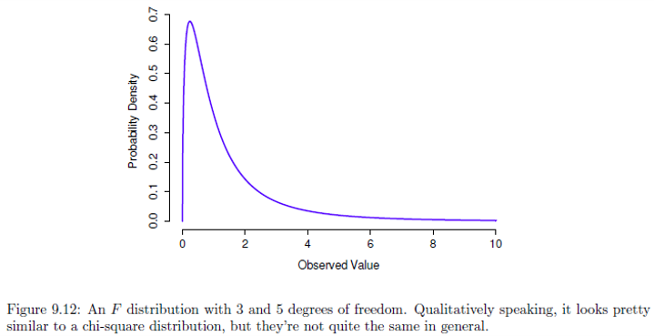
Exercises
Questions (use R below if you need it)
- What is the probability of drawing the queen of hearts from a deck of cards?
- What is the probability that I will draw a card with a black figure on it?
- If I draw 30 cards from the deck and replace each card afterward, what is the probability that I will draw the jack of spades 5 times?
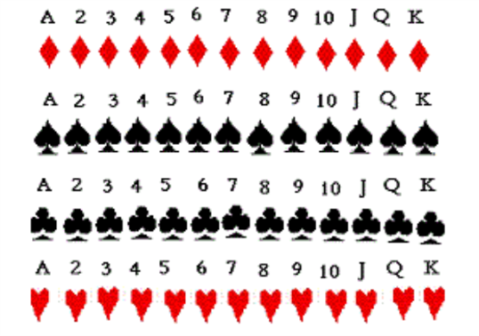
# Your code herequeen<-dbinom(x=1,size=1,prob=1/52)
blck<-dbinom(x=1,size=1,prob=1/2)
jack<-dbinom(x=5,size=30,prob=1/52)#storeExercise: Use R
- Generate 1000 random numbers that follow a normal distribution with a mean of 5 and a sd of 2.
- Plot the histogram of these values
- What is the cumulative probability of me getting 25 soft shell tacos when I order 50 tacos from a restaurant that serves both hard shell and soft shell tacos?
- What does this number mean?
- Make a plot of this distribution
- Check out the following links:
Generate 1000 random numbers with a mean of 5 and an sd of 2 and plot a histogram of these values.
# Your code herex<-rnorm(n=1000,mean=5,sd=2)
hist(x)#storeFind the cumulative probability of getting 25 soft tacos when I order 50 (hard or soft only) and plot the distribution.
# Your code heresfttac<-pbinom(q=25,size=50,prob=1/2)
print(sfttac)#storeConculsion
Preparing for Module 2
- Complete Module 1 readings, tutorials
- Complete Module 2 readings (CH 10 (Navarro)) and Tutorials